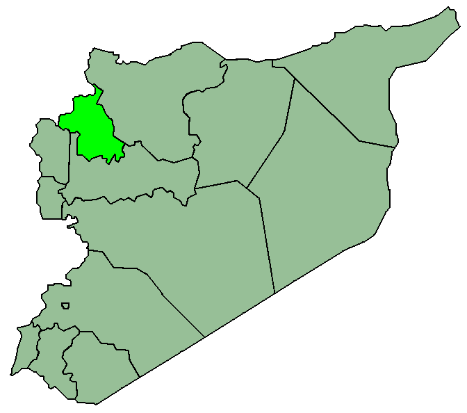

| The Governorate |
Area (km) |
Population |
Population Density |
Photo |
Location |
| Damascus Governorat |
1,599 |
2,211,042 |
18,273.07 |
|
|
| Quneitra Governorate |
1,861 |
87,000 |
46.74 |
|
|
| Latakia Governorate |
2,297 |
1,278,486 |
556.58 |
|
|
| Tartus Governorate |
1,892 |
785,000 |
414.90 |
|
|
| Daraa Governorate |
3,730 |
998,000 |
267.65 |
|
|
| As-Suwayda Governorate |
5,550 |
364,000 |
65.58 |
 |
|
| Idlib Governorate |
6,097 |
1,464,000 |
240.11 |
|
 |
| Hama Governorate |
8,883 |
1,593,000 |
179.33 |
|
|
| Rif Dimashq Governorate |
18,032 |
2,831,738 |
157.03 |
|
|
| Aleppo Governorate |
18,500 |
4,600,166 |
248.65/td>
|
|
|
| Raqqa Governorate |
19,616 |
919,000 |
46.84 |

|
|
| Hasaka Governorate |
23,334 |
1,272,702 |
55.54 |
 |
|
| Deir ez-Zor Governorate |
33,060 |
1,200,500 |
36.31 |
 |
|
| Homs Governorate |
42,223 |
1,762,500 |
41.74 |
|

|
{kind=link}
{kind=link}
{kind=link}
{kind=link}
{kind=link}
{kind=link}
{kind=link}
{kind=link}
{kind=link}
{kind=link}
{kind=link}
{kind=link}
{kind=link}
{kind=link}
{kind=link}
{kind=link}
{kind=link}
{kind=link}
{kind=link}
{kind=link}
{kind=link}
{kind=link}